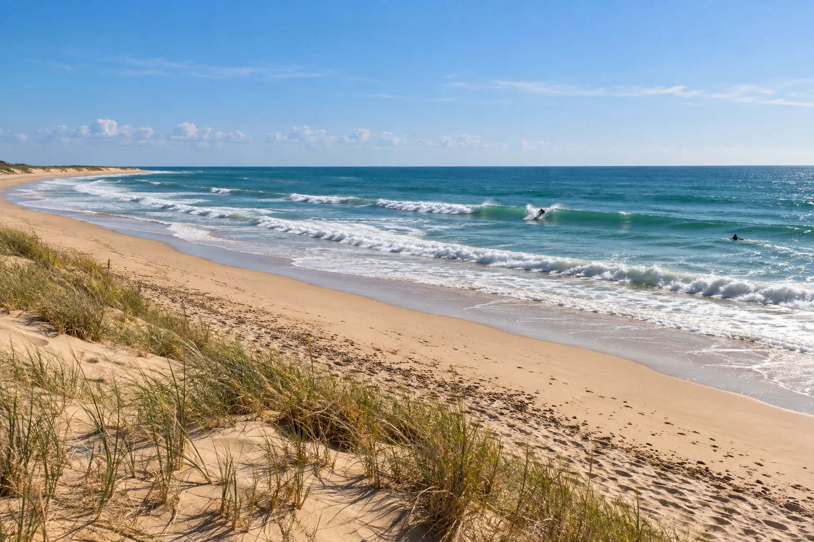

Les Huttes
Île d’Oléron, France · surf, bodyboard, kitesurf

Pointe nord de l’île d’Oléron, près du phare de Chassiron. Plusieurs pics de beach break s’y alignent le long de la côte ouest.
- Lieu
- Île d’Oléron, France
- Niveau
- Intermédiaire
- Activités
- surf, bodyboard, kitesurf
- Type d'eau
- Mer / océan
- Coordonnées
- 46.05, -1.40 (position approximative du secteur)
Dangers à connaître
- Courants de marée puissants à la pointe.
- Vent onshore fréquent l’après-midi.
Le conseil d'Ocean Buddy
Le secteur est exposé : vérifie le vent, un léger vent d’est rend les vagues bien plus propres.
Ouvrir dans Ocean Buddy Télécharger sur l'App Store
Source : Fiche Ocean Buddy · septembre 2026 · à vérifier localement.